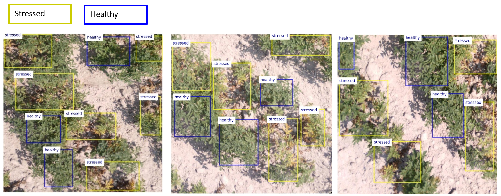

A Dataset of Multispectral Potato Plants Images
The dataset contains aerial images of potato crop and it can be used for training machine learning models for crop health assessment in precision agriculture applications. The images were collected from a field located at the Aberdeen Research and Extension Center - University of Idaho. A Parrot Sequoia multispectral camera mounted on a 3DR Solo drone was used for image acquisition. Sequoia features several sensors: an RGB sensor with 4,608×3,456 pixels (16 Megapixels) resolution, and four monochrome sensors with 1,280×960 pixels (1.2 Megapixels) resolution capturing narrow bands of light wavelengths: green (550 nm), red (660 nm), red-edge (735 nm), and near-infrared (790 nm). The images were collected by flying the drone over the potato field at a low altitude of 3 meters (≈10 feet). The objective was to capture drought stress in Russet Burbank potato plants due to premature plant senescence.
The dataset consists of 360 RGB image patches of size 750×750 pixels in JPG format, divided into a training subset of 300 images and a testing subset of 60 images. The image patches were extracted from the aerial high-resolution images by using cropping, rotating, and resizing operations. Each image is associated with ground-truth annotations (provided are both XML and CSV files), related to the regions with healthy and stressed plants, outlined in the images with rectangular bounding boxes. We used the graphical annotation software LabelImg to manually label the crop regions in the images into two classes: healthy and stressed. The testing subset of images is independent of the training subset, i.e., the image patches for model testing were extracted from different aerial images. The dataset also includes the corresponding image patches of the spectral sensors with red, green, red-edge, and near-infrared bands, having 416×416 pixels size.
The dataset is suited for training machine learning algorithms to quantify the level of crop health in a field, based on detecting healthy vs. stressed plants. We designed the dataset with a goal to provide images that contain both healthy and stressed classes of crop, and maintain a class balance across the images in the dataset. Admittedly, a limitation of the dataset is the low number of images. Therefore, applying data augmentation and/or transfer learning techniques is strongly recommended. For instance, the second dataset below applies image augmentation by rescaling the pixels' intensity in original images, adjusting the gamma value of image brightness, adjusting the sigmoid value of image contrast, and applying a small amount of random noise to the images. Using data augmentation, the initial training set was increased to 1,500 images, whereas data augmentation was not applied to the testing set.
Dataset Organization
- RGB Image Patches (38 MB) – 360 images (3 channels, 750×750 pixels) collected with the RGB sensor and the corresponding labels (in XML and CSV format). The images are divided into a training subset of 300 images, and a testing subset of 60 images.
- RGB Image Patches - Augmented Dataset (199 MB) – 1,500 augmented training images and 60 testing images (3 channels, 750×750 pixels) collected with the RGB sensor and the corresponding labels (in XML and CSV format).
- Spectral Image Patches (46 MB) – 360 images (1 channel, 416×416 pixels) for each of the four spectral bands (red, green, red-edge, and near-infrared) and the corresponding labels (in XML and CSV format). The images are divided into a training subset of 300 images, and a testing subset of 60 testing images.
- Spectral Image Patches - Augmented Dataset (248 MB) – 1,500 augmented training images and 60 testing images (1 channel, 416×416 pixels) for each of the four spectral bands (red, green, red-edge, and near-infrared) and the corresponding labels (in XML and CSV format).
Examples of Images in the Dataset
Acknowledgments
The project for creating the dataset was supported through a Seed Grant awarded by the Office of Research and Economic Development (ORED) at the University of Idaho.
I would like to acknowledge and thank Dr. Kasia Duellman for designing and preparing the plots and for allowing us to collect crop images at the Aberdeen Research and Extension Center, Jordan Todd for his help with setting up the drone, the camera, and collecting the images, and Sujata Butte and Haotian Wang for their help with organizing the images.